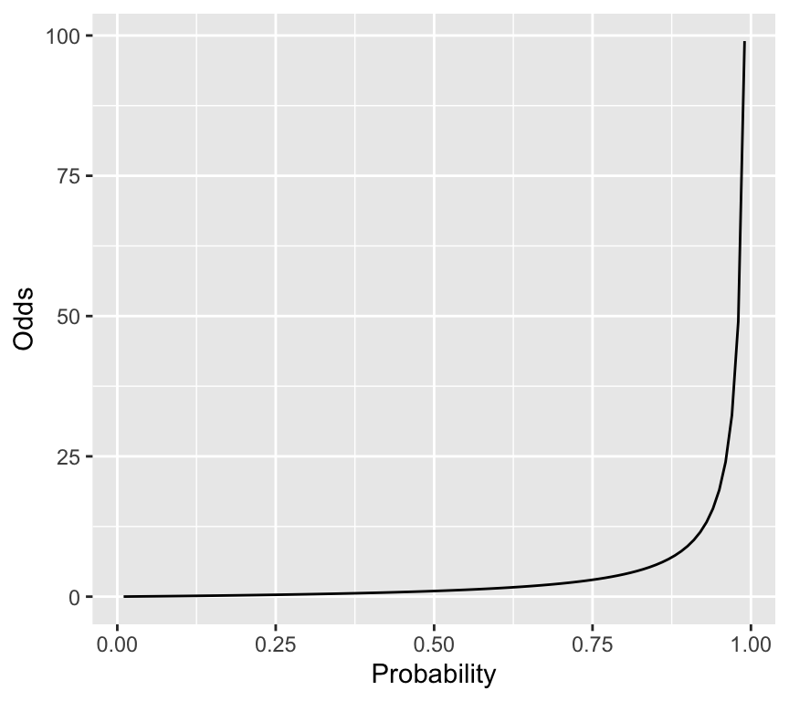
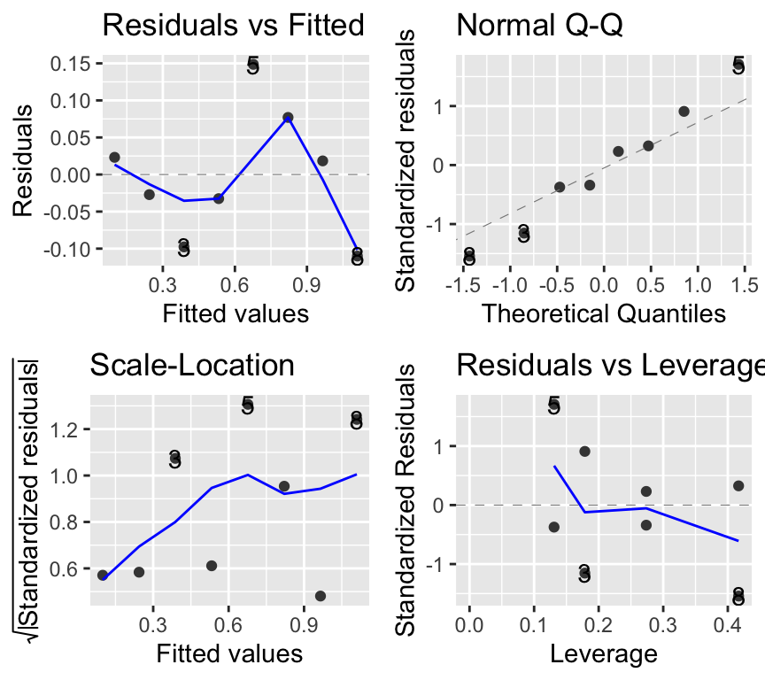

So far in BIO144, we have focused on linear models fitted using lm(). These models assume:
A continuous response variable
Normally distributed residuals
Constant variance (homoscedasticity)
But many biological outcomes are not continuous. In the previous chapter we handled counts with a Poisson GLM. In this chapter we move to an even more common special case: binary outcomes.
Binary outcomes take only two values, often coded as 0 and 1:
1 = yes / success / present / dead
0 = no / failure / absent / alive
The central question becomes:
Which explanatory variables influence the probability\(\pi_i = P(y_i = 1)\)of the outcome?
Important
Bridge from LM to GLM
A GLM keeps the familiar linear predictor from linear models, but: 1) uses a distribution (family) that matches the response type, and
2) uses a link function so predictions respect the natural constraints.
Count data: Poisson family + log link
Binary data: binomial family + logit link
Think–Pair–Share (#tps-binary-examples) Name three outcomes in biology, ecology, or medicine that are naturally binary (0/1). Why would a linear model be risky for each?
Overview
In this chapter we will cover:
Contingency tables and the \(\chi^2\) test (a familiar starting point)
Odds, odds ratios, and log-odds
Logistic regression as a binomial GLM
Interpreting coefficients (odds ratios and probabilities)
Diagnostics, deviances, and (some) model checking
Overdispersion in aggregated binomial data and the quasibinomial fix
Practical complications for individual-level (non-aggregated) 0/1 data
A warm-up: the Chi-square test for a 2×2 table
Binary outcomes often first appear in a contingency table. For example:
Predictor \(x\): hormonal contraception (yes/no)
Outcome \(y\): heart attack (yes/no)
The \(\chi^2\) (chi-squared) test asks whether the proportion (or frequency) of heart attacks is the same in the two contraception groups.
A concrete example dataset
We will reconstruct the classic 2×2 table from some example and store it as a dataset:
Rows: 4 Columns: 3
── Column specification ────────────────────────────────────────────────────────
Delimiter: ","
chr (2): contraception, heart_attack
dbl (1): n
ℹ Use `spec()` to retrieve the full column specification for this data.
ℹ Specify the column types or set `show_col_types = FALSE` to quiet this message.
Here are the first few rows of the heart attack dataset:
head(heart_attack)
# A tibble: 4 × 3
contraception heart_attack n
<chr> <chr> <dbl>
1 yes yes 23
2 yes no 34
3 no yes 35
4 no no 132
We can create the table and run the \(\chi^2\) test.
Here is the data ready for analysis:
tab <-xtabs(n ~ contraception + heart_attack, data = heart_attack)tab
heart_attack
contraception no yes
no 132 35
yes 34 23
Continuity correction chisq.test() defaults to Yates’ continuity correction for 2×2 tables. Here we set correct = FALSE to match the classic “hand-calculation” style example.
Think–Pair–Share (#tps-chisq-meaning) What is the null hypothesis of this \(\chi^2\) test, in words?
Quantifying an association: risk and odds
If \(\pi\) is the probability of “yes” (e.g. heart attack), then:
Risk (probability) is \(\pi\)
Odds is \(\pi/(1-\pi)\)
The odds ratio (OR) compares the odds in two groups:
Odds Ratio = OR = \(\frac{\text{odds in group 1}}{\text{odds in group 2}}\).
The log odds ratio is \(\log(OR)\). It is 0 when \(OR=1\).
Important
Odds are not probabilities
An odds of 3 means “3 to 1”, which corresponds to a probability of \(3/(3+1)=0.75\). Odds and probabilities are linked mathematically, but they are not the same thing.
Think–Pair–Share (#tps-odds-intuition) Why might odds ratios be a convenient effect size in a regression model? (This is a difficult question—think carefully, and Pair!)
From tables to regression models
Contingency tables are a good start, but they are limited:
they typically compare groups (few categorical predictors),
they don’t easily handle continuous predictors (e.g. dose),
they don’t naturally generalise to multiple predictors.
When \(y\) is binary or binomial, the standard regression approach is logistic regression, a binomial GLM.
Working example: beetle mortality and insecticide dose (aggregated data)
Eight groups of beetles were exposed to an insecticide dose for 5 hours. For each dose level, we know how many beetles were tested and how many were killed. This is binomial (aggregated) data.
Rows: 8 Columns: 4
── Column specification ────────────────────────────────────────────────────────
Delimiter: ","
dbl (4): Dose, Number_tested, Number_killed, Mortality_rate
ℹ Use `spec()` to retrieve the full column specification for this data.
ℹ Specify the column types or set `show_col_types = FALSE` to quiet this message.
Here are the first few rows of the beetle dataset:
It contains one predictor (Dose) and two pieces of information about the binary outcome (Number_killed and Number_tested). The mortality rate is also included, and is the proportion killed at each dose (Number_killed / Number_tested).
As always, start with a graph.

Think–Pair–Share (#tps-why-lm-wrong) What goes wrong if we fit a linear regression to a probability (mortality rate)? Name at least two problems.
Two tempting but wrong analyses
Wrong analysis 1: linear regression on mortality rate
mod_beetle_lm <-lm(Mortality_rate ~ Dose, data = beetle)
This can predict probabilities below 0 or above 1 and does not respect the mean–variance structure of binomial data.
Check out the model diagnostics:
par(mfrow =c(2, 2))plot(mod_beetle_lm)
We don’t have so many data points here, but the residuals vs fitted indicating non-linearity and the Q-Q plot indicating non-normality are both concerning. Also the scale-location plot suggests non-constant variance.
Wrong analysis 2: Poisson regression on counts killed
A Poisson model ignores the fact that deaths are bounded by the number tested at each dose.
mod_beetle_pois <-glm(Number_killed ~ Dose, data = beetle, family = poisson)summary(mod_beetle_pois)$coefficients
Estimate Std. Error z value Pr(>|z|)
(Intercept) -0.77418056 0.494639994 -1.565139 1.175502e-01
Dose 0.06678281 0.007240113 9.224002 2.862145e-20
# Example of the "impossible" issue:dose_example <-76.54pred_killed <-predict(mod_beetle_pois,newdata =data.frame(Dose = dose_example),type ="response")pred_killed
At the highest dose (76.54), the model predicts about 76 deaths, but only 60 beetles were tested! Clearly this is an impossible prediction. We can’t go on with the Poisson model either.
Caution
Poisson vs binomial, when to use each
Use a Poisson model when counts have no known upper limit.
Use a binomial model when counts are “\(k\) successes out of \(n\) trials”. Use a binomial model when each observation is a 0/1 outcome.
Think–Pair–Share (#a_probability_not_linear) Why is it dangerous to model probabilities directly using a linear model?
In words, this means that the probability of success (Y=1) is \(\pi\), and the probability of failure (Y=0) is \(1-\pi\). And that this probability is Bernoulli distributed. Bernoulli is a special case of the binomial distribution with \(n=1\).
Mean and variance are:
\(E(Y)=\pi,\quad Var(Y)=\pi(1-\pi)\)
Binomial (aggregated) data
For \(k\) successes out of \(n\) trials:
\(Y \sim \text{Binomial}(n,\pi)\)
This means that the number of successes \(Y\) in \(n\) independent Bernoulli trials, each with success probability \(\pi\), follows a binomial distribution.
Mean and variance are:
\(E(Y)=n\pi,\quad Var(Y)=n\pi(1-\pi)\)
Note
Key pattern
For Bernoulli/binomial data, the variance is determined by the mean. This is one reason “constant variance” fails for linear models.
Think–Pair–Share (#tps-binom-variance) For fixed \(n\), at what value of \(\pi\) is \(Var(Y)=n\pi(1-\pi)\) largest? At what values of \(\pi\) is it smallest?
The inverse link (back-transformation) is the logistic function:
\(\pi_i = \frac{\exp(\eta_i)}{1+\exp(\eta_i)}\)
Important
Why the logit link?
It maps probabilities \((0,1)\) to the whole real line \((-\infty,\infty)\), so the linear predictor can take any value while \(\pi_i\) stays valid, i.e., [0,1].
Think–Pair–Share (#tps-identity-link-binary) What would go wrong if we used the identity link \(E(y_i)=\eta_i\) for a binary outcome? And which link function is this, by the way?
Fitting logistic regression in R (aggregated binomial data)
For aggregated binomial data, we provide successes and failures:
Now we can fit the logistic regression model, being careful to specify family = binomial and to use cbind(successes, failures) for the response. Because we specify the response this way, R knows we are working with aggregated binomial data. And because we specify family = binomial, R knows to use the logit link (the default).
beetle_glm <-glm(cbind(Number_killed, Number_survived) ~ Dose,data = beetle, family = binomial)
And as usual we can check the model diagnostics:
par(mfrow =c(2, 2))plot(beetle_glm)
Not great, but again we have only 8 dose levels. Let us continue in any case and look at the ANOVA table and the coefficients.
Important
The response in aggregated binomial data
Use cbind(successes, failures) in glm(..., family = binomial).
successes: number of 1s
failures: number of 0s
Interpreting coefficients: log-odds, odds ratios, and probabilities**
In logistic regression:
\(\beta_1\) is a log odds ratio for a one-unit change in the linear predictor
\(\exp(\beta_1)\) is the odds ratio (multiplicative change in odds)
beta1 <-coef(beetle_glm)[["Dose"]]exp(beta1)
[1] 1.278311
Interpretation: increasing dose by 1 unit multiplies the odds of death by \(\exp(\beta_1)\).
Note
Odds vs probability
A constant odds ratio does not mean a constant change in probability. The probability change depends on where you start (e.g. \(\pi=0.05\) vs \(\pi=0.80\)).
Think–Pair–Share (#tps-or-vs-probability) Why might a treatment have a “big” odds ratio, but only a “small” change in probability in one situation?
Think–Pair–Share (#a_odds_vs_probability) Why might odds be convenient mathematically,
even if probabilities feel more intuitive?
Analysis of deviance (likelihood-based ANOVA)
As for count-data GLMs, we use likelihood and deviance. Nested models can be compared with a \(\chi^2\) test.
As with the Poisson GLM, the model is fit using maximum likelihood estimation, and the deviance is used to assess goodness-of-fit. So we see a table quite similar to that for the Poisson GLM. In this case the Dose row shows a huge amount of the deviance is explained by dose, and so the \(p\)-value is very small.
Plotting the fitted relationship
We will plot \(P(Y=1)\) (mortality probability) against dose using model predictions.
ggplot() +geom_point(data = beetle, aes(x = Dose, y = Mortality_rate)) +geom_line(data = dose_grid, aes(x = Dose, y = p_hat), color ="blue") +geom_ribbon(data = dose_grid,aes(x = Dose, ymin = p_hat_lower_2se, ymax = p_hat_upper_2se),alpha =0.2, fill ="blue") +labs(x ="Dose", y ="Predicted mortality probability")
The plot is intentionally made to show what happens at very low and very high dose. At very low dose, the predicted mortality probability approaches 0, and at very high dose it approaches 1. This is a key feature of logistic regression: the predicted probabilities are always between 0 and 1. We also see that the standard errors are larger at intermediate doses, where the slope of the curve is steepest. And the standard errors are smaller at very low and very high doses, where the curve flattens out.
Reporting
When reporting results from a logistic regression, you might say something like:
“A logistic regression was used to model the probability of beetle mortality as a function of insecticide dose. The odds of mortality increased by a factor of 1.28 (95% CI: 1.23, 1.34 per unit increase in dose. This indicates that higher doses are associated with higher odds of mortality. The model predicts that at a dose of 50, the probability of mortality is approximately 0.09 (95% CI: -2.34, -2.26 transformed to probability scale). The model explained a significant amount of deviance (Deviance = 8.4, df = 6, \(\chi^2\) p < 0.001).”
Overdispersion in aggregated binomial data
Overdispersion means the variability is larger than the binomial model expects. A quick (rough) check for aggregated binomial data is:
\(\text{Residual deviance} \approx \text{df}\)
Values much larger than 1 for the ratio \(\frac{\text{Residual deviance}}{\text{df}}\) suggest overdispersion. In practice we look for values above about 1.5 or 2.
In the beetle mortality example:
deviance(beetle_glm)
[1] 8.437898
df.residual(beetle_glm)
[1] 6
deviance(beetle_glm) /df.residual(beetle_glm)
[1] 1.406316
Caution
Type I error inflation (binomial overdispersion)
If there is overdispersion and we ignore it, standard errors are usually too small and \(p\)-values can be too small (anti-conservative). That increases false positives (Type I errors).
Quasibinomial as a pragmatic fix
If we had found overdispersion, a simple fix is to use the quasibinomial family. This estimates an extra dispersion parameter from the data. For example:
beetle_glm_q <-glm(cbind(Number_killed, Number_survived) ~ Dose,data = beetle, family = quasibinomial)
Note
quasibinomial estimates an extra dispersion parameter from the data. It is often a good “first fix” when aggregated binomial data look overdispersed.
Individual-level binary data (non-aggregated)
In some datasets we observe a single 0/1 outcome per individual, rather than aggregated counts. The same logistic regression model is used, but:
simple plots of \(y\) against predictors look uninformative (two bands)
some diagnostics and dispersion checks need extra care
Example: blood screening (ESR)
Individuals with low ESR (ESR is erythrocyte sedimentation rate and is a measure of general inflammation and infection) are generally considered healthy; ESR > 20 mm/hr indicates possible disease. We will model the probability of high ESR using fibrinogen and globulin concentration.
Rows: 32 Columns: 4
── Column specification ────────────────────────────────────────────────────────
Delimiter: ","
chr (1): ESR
dbl (3): fibrinogen, globulin, y
ℹ Use `spec()` to retrieve the full column specification for this data.
ℹ Specify the column types or set `show_col_types = FALSE` to quiet this message.
The ESR outcome is in two variables. ESR is a factor with levels “low” and “high”. It is also present as a numeric variable y, coded 0 (low) and 1 (high). The predictors are fibrinogen and globulin, both continuous.
Complication 1: graphical description
Simple scatter plots of 0/1 data are not so informative:

A more informative plot is a conditional density plot. This shows the proportion of 0s and 1s at each value of the predictor.
par(mfrow =c(1, 2))cdplot(factor(y) ~ fibrinogen, data = plasma, xlab ="Fibrinogen")cdplot(factor(y) ~ globulin, data = plasma, xlab ="Globulin")
par(mfrow =c(1, 1))
It looks like higher fibrinogen and higher globulin are associated with higher probability of high ESR. The pattern appears stronger for fibrinogen.
Fit the logistic regression model
In the case of non-aggregated individual-level 0/1 data, we simply use y as the response variable. We have to remember to specify family = binomial in glm().
plasma_glm <-glm(y ~ fibrinogen + globulin, data = plasma, family = binomial)
Complication 2: model checking and dispersion
Residual plots exist, but can be hard to interpret for 0/1 data:
par(mfrow =c(2, 2))plot(plasma_glm)
Important
Dispersion checks need caution for individual 0/1 data
The simple “residual deviance \(\approx\) residual df” rule-of-thumb is most useful for aggregated binomial data. With individual-level 0/1 data, detecting overdispersion is more subtle and often requires additional structure (e.g. grouping, random effects).
Two common practical issues
1. Separation
Sometimes a predictor (or combination of predictors) perfectly predicts the outcome (all 0s on one side, all 1s on the other). This is called (complete) separation and can cause extremely large coefficient estimates and warnings.
Caution
Separation warning
If your logistic regression produces enormous standard errors or warnings about fitted probabilities being 0 or 1, check for separation. Remedies include more data, simpler models, or penalized methods (advanced topic).
2. Probability vs odds ratio in reporting
Odds ratios are the default “native” scale of logistic regression, but probabilities are often easier to interpret. In practice, you may report odds ratios and translate to probabilities at meaningful predictor values.
Summary
There is a lot more to logistic regression and binary data. We can of course make models to analyse more complex data and questions, including multiple predictors, different types of predictor (continuous and categorical), interactions, and so on. But the key ideas are all above. To summarize the main points:
Data can be either aggregated binomial (successes out of trials) or individual-level 0/1.
The key questions are about how predictors influence the probability of “yes”.
The distribution family is binomial (Bernoulli for individual-level data).
The link function is the logit (log-odds).
If we find overdispersion in aggregated binomial data, quasibinomial is a pragmatic fix.
With non-aggregated individual-level 0/1 data, plotting and diagnostics require more care.